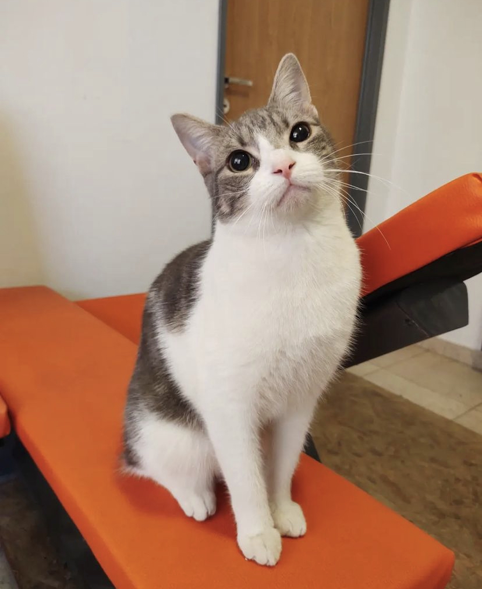

Lo rescatamos hace unos meses sin ni siquiera fuerzas para incorporarse. Su pata estaba literalmente cortada, con todo su huesito expuesto y una bichera enorme, muriendo de dolor. Pero nuestro pequeño es muy fuerte y pudo afrontar todo gracias a la ayuda de su transitante que le dio todo el amor y la fuerza que le faltaba y lo ayudó en cada paso. Su patita fue amputada, pero hoy en día es un perro completamente feliz y sin ninguna limitación. Es muy mimoso, educado, hace todas sus necesidades afuera, es compañero y obediente

Esta gatita que encontramos hace unos meses es súper especial. Tiene 1 año y medio aproximadamente y ya esta castrada. Es super charlatana, muy cariñosa, te persigue para recibir mimos y que la rasques. Se lleva muy bien con todos y puede ir con otros gatos ya que es Vif/Vilef negativo.

Hace unos meses rescatamos a este gatito, durante una jornada de Castración. Tiene apróximadamente 1 año y creemos sufrió bastante en la calle, ya que es bastante miedosa, le cuesta entrar en confianza. Pero una vez que confía en vos, es el gatito más bueno, dulce y agradecido del mundo! Es muy tranquilo, ama los mimos y estar cerquita tuyo. Además, se lleva genial con los perros y otros gatos.Esta desparasitado, castrado y sabe usar las piedritas.
Cuando lo encontramos era un bebito completamente desnutrido y asustado, tenía una herida en la boca por la cual no podía alimentarse bien. Ahora todo eso quedó atrás y se convirtió en un cachorro fuerte y hermoso de sólo 7 meses, que esta listo hace rato para encontrar una familia. Huesitos está vacunado, sabe pasear y sociabilizar con otros perros, le gusta jugar y es muy inteligente. Sabe quedarse solito, y esta aprendiendo a hacer sus necesidades en los paseos.
Este perrito llegó a nosotros porque fue abandonado, lo dejaron a su suerte, en una propiedad privada que amenazaba con sacarlo a la calle de manera urgente. Cuando fuimos a buscarlo, nos encontramos con un perrito golpeado, que luchaba contra el moquillo. Pero él fue un perrito fuerte y pudo salir adelante a pesar de todo lo que tuvo que vivir. Luego de 5 meses, podemos decir que ya tiene su alta y busca una familia para siempre! Es un gran compañero, súper dulce y mimoso. Hace sus necesidades afuera, ama jugar con su pelotita, a los niños y dormir la siesta!
Esta gatita apareció en una obra de construcción donde trabaja un voluntario. Era muy chiquita y estaba hambrienta, así que no dudó en llevársela y transitarla. Tiene aproximadamente 5 meses. Esta desparasitada, castrada y usa piedritas. Es muy juguetona y cariñosa.
Este perrito apareció hace unos meses en el trabajo de una de las voluntarias. Estaba solito con mucho miedo, mirada muy triste y sin ganas de comer. Pero eso no era todo, sino que también presentaba mioclonias características del MOQUILLO. Pasó una noche en internación y tuvo consulta con un neurólogo, pero por suerte, pronto pudimos comprobar que sus mioclonias ¡sólo eran secuelas! Y que nuestro guerrero ya había superado la enfermedad. Hoy él es un perrito súper feliz, se porta bárbaro en la casa y en la calle, sabe quedarse solito, sabe pasear. Se lleva bien con todos Y es pura dulzura y amor! Creemos que tiene alrededor de 2 años y es tamaño mediano.